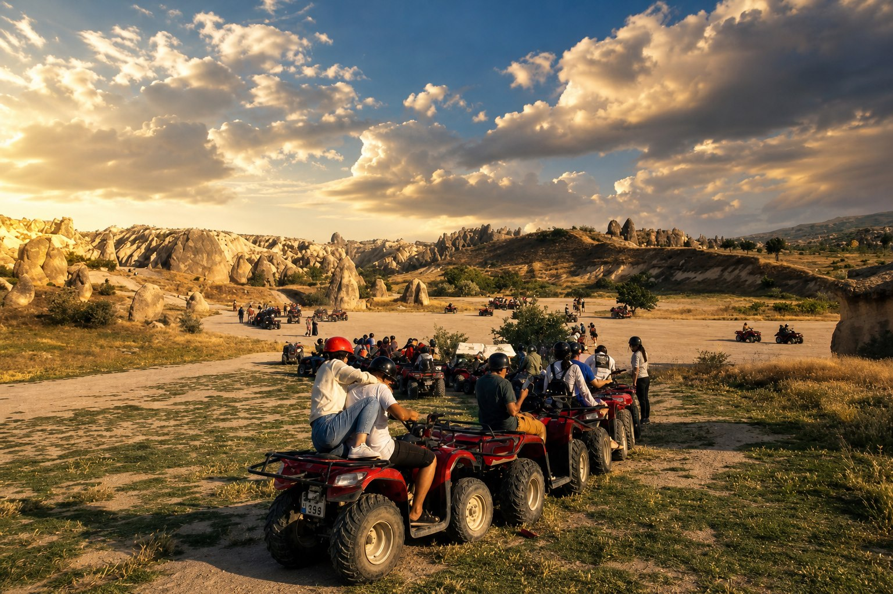

Gün batımı seçeneği
01 — Gaz sizde
ATV Safari
Konvoy hâlinde beyaz tüf yamaçlarına çıkıyoruz. Rehber önde, siz kendi ATV'nizde — tempo gruba göre ayarlanır. Vadiye bakan tepelerde motorlar susar, fotoğraf konuşur.
- Kasklar bizden, kısa alışma turuyla başlarız
- Rehber eşliğinde konvoy — kimse geride kalmaz
- Vadi manzaralı tepelerde foto durakları
- Gün batımı çıkışı — panodaki klasik